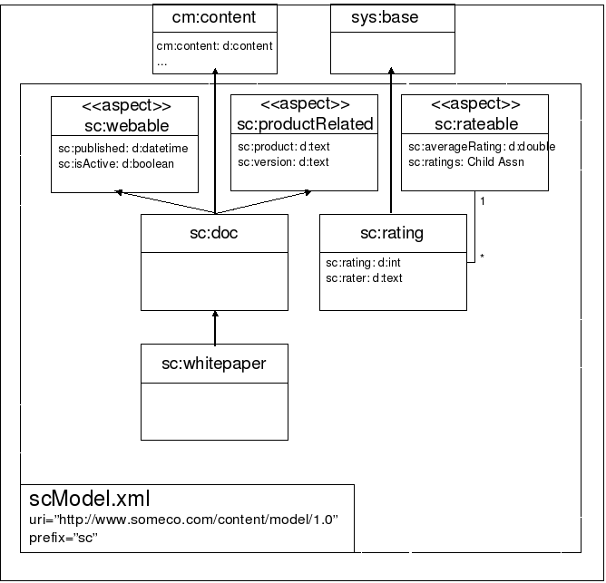
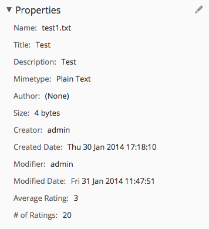

Implementing Custom Behaviors in Alfresco¶
Jeff Potts, Metaversant Group — July, 2021
License¶

This work is licensed under the Creative Commons Attribution-ShareAlike 3.0 Unported License. To view a copy of this license, visit http://creativecommons.org/licenses/by-sa/3.0/ or send a letter to Creative Commons, 444 Castro Street, Suite 900, Mountain View, California, 94041, USA.
Introduction¶
This tutorial discusses how to write your own custom behavior code in Java or JavaScript and then bind that code to node events or “policies”.
In previous tutorials I've discussed how to create custom content models and how to write custom actions. In both cases, you've seen how to write code that works with custom content types, properties, aspects, and associations, but the code wasn't tightly coupled to the objects on which it operated. For example, with an action, the business logic is triggered by something—a rule, a clicked link in the user interface, a schedule, or a workflow—rather than being bound to the content type or aspect.
Actions are very useful when the business logic the action carries out is generic enough to be applied to many types of objects. The out-of-the-box "copy", "move", or "add aspect" actions are obvious examples.
There are times, though, when you want code to be tightly-coupled to a content type because you need to be sure it gets executed every time something happens to that object rather than leaving it up to a rule on a folder or some other trigger. Fortunately, Alfresco provides just such a mechanism—it's called behavior.
Behaviors are used throughout Alfresco. Auditing and versioning are examples where behaviors are involved. Here are a couple of other real world examples where behaviors might be useful:
- You might need to default some metadata values using logic that can't be expressed using Alfresco content model XML. An example might be that you want to generate a unique identifier for an object when it is added to the repository. You can write a custom behavior that will set the property with the value of the identifier regardless of how the object is created.
- Suppose you have some metadata stored on a folder and you want some of that metadata to be copied to items that get placed in those folders. You could write a custom behavior to handle this kind of synchronization.
In this tutorial you'll see a simple example also based on a real-world implementation: Using a custom behavior to compute the average user rating (based on a five star scale) for a piece of content.
As a side-note, Alfresco has rating functionality built-in. Out-of-the-box it uses a simple "like" model but the underlying model supports other schemes. This tutorial completely ignores what's available out-of-the-box.
You should already be familiar with general Alfresco concepts. If you want to follow along, you should also know how to write basic Java code. You may want to work through the custom content models tutorial if you aren't already familiar with how to extend Alfresco's content model.
All of the source code that accompanies this tutorial is available on GitHub.
Introducing the user ratings example¶
Recall that the custom content types tutorial created a custom type called
"whitepaper" for a fictitious company called SomeCo. The custom model also
included an aspect called “webable” that gets attached to content objects SomeCo
wants to show on the web. So, for example, SomeCo might use Alfresco to manage
all of its whitepapers, but show only a subset on the web. Whitepapers that need
to be shown on the web get the webable aspect attached and the sc:isActive
flag set to true. The front-end can then query for whitepapers based on that
flag.
Now let's extend that example further. Suppose that the Marketing folks at SomeCo have decided to add user ratings to their web site. They would like users to be able to assign a rating to a whitepaper and to display the average of all ratings received for a specific whitepaper.
Assuming SomeCo wants to store the ratings in Alfresco instead of some other repository, like a relational or NoSQL database, one way to do this is to create a custom “rating” type that is related to a whitepaper through a child association. A custom “rateable” aspect can be used to define the association as well as a property to store the average rating for that whitepaper. Any object in the repository will get all of the metadata it needs to become "rateable" simply by adding the aspect to the object.
The image below shows the original custom content model with these enhancements.

That takes care of the data model, but what about the code that computes the average? There are a few options to consider:
- Rule Action. One way to handle it would be to write an action that gets called by a rule. Any time a rating is added to a folder, the rule would trigger the action to update the average. But this isn't the best option because every time SomeCo wants to use user ratings functionality, they'd have to make sure to set up a rule on the folder.
- Scheduled Action. A scheduled action might not be bad—it could be written to find all objects with the rateable aspect and then compute the average. But if SomeCo wants the average rating computed in real-time (and let's assume they do) a scheduled action isn't a great option.
- Behavior. The third (and best) option is to use a behavior. The behavior will contain the logic needed to compute the average. It will be bound to the appropriate policies on the rating content type so that any time a rating gets created (or deleted), the behavior will find the rating's parent (the whitepaper) and recalculate the average rating.
What can trigger a behavior?¶
So the rating content type will contain business logic that knows how to compute the overall average rating for a whitepaper. But what will trigger that logic? The answer is that there are a bunch of policies to which your behavior can be bound. To find out what's available, you need only look as far as the source code (or the Javadocs). If you search for classes that end in "*Policies" you'll find several interfaces, including:
- CheckOutCheckInServicePolicies
- ContentServicePolicies
- CopyServicePolicies
- LockServicePolicies
- NodeServicePolicies
- TransferServicePolicies
- VersionServicePolicies
Each of those interfaces contains inner interfaces that represent the policies you can hook into. Check the Javadocs or source code for specifics—I'm listing the methods in the table below so you can see an example of what's available.
Note: To make it easier to read, I'm omitting the inner interface which
follows the pattern of <method-name>Policy. For example, the
onContentUpdate method is a method of the inner interface
OnContentUpdatePolicy.
| Interface | Method |
|---|---|
| org.alfresco.repo.content.ContentServicePolicies | onContentPropertyUpdate \ |
| onContentRead \ | |
| onContentUpdate | |
| org.alfresco.repo.copy.CopyServicePolicies | beforeCopy \ |
| onCopyComplete \ | |
| onCopyNode | |
| org.alfresco.repo.node.NodeServicePolicies | beforeAddAspect \ |
| beforeArchiveNode \ | |
| beforeCreateNode \ | |
| beforeCreateStore \ | |
| beforeDeleteAssociation \ | |
| beforeDeleteChildAssociation \ | |
| beforeDeleteNode \ | |
| beforeMoveNode \ | |
| beforeRemoveAspect \ | |
| beforeSetNodeType \ | |
| beforeUpdateNode \ | |
| onAddAspect \ | |
| onCreateAssociation \ | |
| onCreateChildAssociation \ | |
| onCreateNode \ | |
| onCreateStore \ | |
| onDeleteAssociation \ | |
| onDeleteChildAssociation \ | |
| onDeleteNode \ | |
| onMoveNode \ | |
| onRemoveAspect \ | |
| onSetNodeType \ | |
| onUpdateNode \ | |
| onUpdateProperties | |
| org.alfresco.repo.version.VersionServicePolicies | beforeCreateVersion \ |
| afterCreateVersion \ | |
| onCreateVersion \ | |
| calculateVersionLabel |
Table: Policies available for behavior binding
The rating behavior needs to recalculate a whitepaper's rating either when a new
rating is created or when a rating is deleted. One possibility would be to bind
the behavior to the NodeService policy's onCreateChildAssociation and
onDeleteChildAssociation policy for the whitepaper node. But that would mean
constantly inspecting the association type to see if the rating needed to be
recalculated because there could be other child associations added to the node
besides ratings. Instead, the rating behavior will bind to the rating node's
onCreateNode and onDeleteNode policies.
Java or JavaScript?¶
There are two options for writing the code for the behavior: Java or JavaScript. Which one to use depends on the standards you've settled on for the solution you are building. This tutorial will implement the ratings example using Java first and then again in JavaScript so you can see how it is done.
Setup¶
Before getting too far down the road, let me tell you about the tools you'll need and then give you a description of the project organization.
Tools¶
Here is what I am using on my machine:
- MacOS 11.4
- Java OpenJDK 11.0.2
- Apache Maven 3.8.1
- Alfresco Maven SDK 4.2 (No download necessary)
- Docker 20.10.6
- Docker Compose 1.29.1
By default, when you create an Alfresco project using the Alfresco Maven SDK the project will be configured to depend on the latest stable Alfresco Community Edition build.
An IDE is optional. Most people working with Alfresco use IntelliJ, Eclipse, or something similar.
Project Organization¶
I am going to use the Alfresco Maven SDK to create a project using the "all-in-one" archetype. The project will package up my customizations in two AMPs (Alfresco Module Packages): One AMP for the "repo" tier and one AMP for the "share" tier.
I am not going to spend much time talking about how the Alfresco Maven SDK works. If you aren't already familiar with it, you may want to read the Getting Started with the Alfresco Maven SDK tutorial on ecmarchitect.com first and then come back to this one.
If you are planning on following along, go ahead and use the Alfresco Maven SDK
to create a new project. Use a groupId of "com.someco" and an artifactId of
"behavior-tutorial".
I'm going to make a couple of quick changes to the generated project.
First, we always want to generate AMP files for our projects. Starting with SDK 3.0.0, the default is to generate JAR files. That's easily fixed by uncommenting the "maven-assembly-plugin" in the list of plugins in the pom.xml file.
Next, the Java code we are about to write has a compile-time dependency on the content tutorial repo tier project. To satisfy that, edit the "pom.xml" file in the behavior-tutorial-platform folder to add the following dependency:
<dependency>
<groupId>com.someco</groupId>
<artifactId>content-tutorial-platform</artifactId>
<version>1.0-SNAPSHOT</version>
<scope>provided</scope>
</dependency>
Now we're ready to begin.
Implementing and deploying the custom behavior in Java¶
Let's do the Java example first. Here are the steps:
- Create a new custom model specifically for ratings. The model will define the new rateable aspect and rating type.
- Write the custom behavior class and bind it to the appropriate policies. Configure a Spring bean to initialize the behavior class and pass in any dependencies.
- Write and execute an integration test for the behavior.
Let's get started.
Step 1: Create a ratings model¶
In this step you will implement a content model used to persist ratings, optionally configure the user interface so you can see the average rating and rating count in Alfresco Share, define a Java class to hold constants for the model, and write an integration test to test the new aspect.
Implement the rating type and rateable aspect¶
As you learned in the content types tutorial, models are defined using XML and the XML file resides in:
$TUTORIAL_HOME/behavior-tutorial-platform/src/main/main/resources/alfresco/module/behavior-tutorial-platform/model
The Alfresco Maven SDK should have created a model directory for you and it may have populated it with sample content model files. Delete those files as they are not needed.
Now, create a new model XML file called "scRatingsModel.xml" with the following content:
<?xml version="1.0" encoding="UTF-8"?>
<!-- Definition of new Model -->
<model name="scr:somecoratingsmodel" xmlns="http://www.alfresco.org/model/dictionary/1.0">
<!-- Optional meta-data about the model -->
<description>Someco Ratings Model</description>
<author>Jeff Potts</author>
<version>1.0</version>
<!-- Imports are required to allow references to definitions in other models -->
<imports>
<!-- Import Alfresco Dictionary Definitions -->
<import uri="http://www.alfresco.org/model/dictionary/1.0" prefix="d" />
<!-- Import Alfresco Content Domain Model Definitions -->
<import uri="http://www.alfresco.org/model/content/1.0" prefix="cm" />
<import uri="http://www.alfresco.org/model/system/1.0" prefix="sys" />
</imports>
<!-- Introduction of new namespaces defined by this model -->
<namespaces>
<namespace uri="http://www.someco.com/model/ratings/1.0" prefix="scr" />
</namespaces>
</model>
The model needs a type and an aspect. The chunk of XML below adds the type.
Insert it after the closing namespaces element:
<types>
<type name="scr:rating">
<title>Someco Rating</title>
<parent>sys:base</parent>
<properties>
<property name="scr:rating">
<type>d:int</type>
<mandatory>true</mandatory>
</property>
<property name="scr:rater">
<type>d:text</type>
<mandatory>true</mandatory>
</property>
</properties>
</type>
</types>
Note that scr:rating inherits from sys:base. That's because rating objects
aren't going to store any content, they will only store properties.
Now add the scr:rateable aspect. The aspects element goes after the closing
types element:
<aspects>
<aspect name="scr:rateable">
<title>Someco Rateable</title>
<properties>
<property name="scr:averageRating">
<type>d:double</type>
<mandatory>false</mandatory>
</property>
<property name="scr:totalRating">
<type>d:int</type>
<mandatory>false</mandatory>
</property>
<property name="scr:ratingCount">
<type>d:int</type>
<mandatory>false</mandatory>
</property>
</properties>
<associations>
<child-association name="scr:ratings">
<title>Rating</title>
<source>
<mandatory>false</mandatory>
<many>true</many>
</source>
<target>
<class>scr:rating</class>
<mandatory>false</mandatory>
<many>true</many>
</target>
</child-association>
</associations>
</aspect>
</aspects>
The scr:rateable aspect has three properties used to store the average rating,
total rating, and rating count. It also defines the child association between a
piece of content and its ratings.
Using an aspect means any piece of content in the repository can become "rateable" simply by adding the aspect to the object. SomeCo may start out using ratings only for whitepapers and then decide later to use them for other types of content. If so, it won't require any code changes. That's the beauty of aspects.
Alfresco needs to know about the new model. Models are registered through Spring. There are multiple Spring context files. It doesn't really matter which one you use to wire in your models. Newer versions of the SDK use the bootstrap-context.xml file, so let's use that. is called service-context.xml and it lives in:
$TUTORIAL_HOME/behavior-tutorial-platform/src/main/resources/alfresco/module/behavior-tutorial-platform/context
The context file may already exist and probably contains sample Spring beans used to wire in sample models and labels. Replace whatever is there with the bean below. It refers to the model XML file created earlier as well as a properties file that doesn't exist yet:
<bean id="${project.artifactId}_dictionaryBootstrap" parent="dictionaryModelBootstrap" depends-on="dictionaryBootstrap">
<property name="models">
<list>
<value>alfresco/module/${project.artifactId}/model/scRatingsModel.xml</value>
</list>
</property>
<property name="labels">
<list>
<value>alfresco/module/${project.artifactId}/messages/scRatingsModel</value>
</list>
</property>
</bean>
With that, the model is set up and ready to go.
Optionally configure the user interface¶
Behaviors operate behind the scenes. So, really, there is no reason to configure the user interface at all. But I like to do it because it makes it easier to debug. And, SomeCo might want to use Alfresco Share to see the average rating and rating count for a piece of content that has the rateable aspect.
In the previous step you added a Spring bean that referred to a properties bundle used for the labels associated with the model. The labels go in a file called scRatingsModel.properties. That file lives in:
$TUTORIAL_HOME/behavior-tutorial-platform/src/main/resources/alfresco/module/behavior-tutorial-platform/messages
The content of that file looks like this:
#scr:rating
scr_somecoratingsmodel.type.scr_rating.title=Rating
scr_somecoratingsmodel.property.scr_rating.title=Rating
scr_somecoratingsmodel.property.scr_rater.title=Rater
#scr:rateable
scr_somecoratingsmodel.aspect.scr_rateable.title=SomeCo Rateable
scr_somecoratingsmodel.property.scr_averageRating=Average Rating
scr_somecoratingsmodel.association.scr_ratings.title=Ratings
You can delete the example properties file that may already be in the messages directory.
That's all that's needed in the behavior-tutorial-platform project. The rest of the user interface configuration takes place in the behavior-tutorial-share project.
Because these steps have already been covered in the custom content types tutorial, I'll just list the files here and you can either copy them into your project or do without them:
- $TUTORIAL_HOME/behavior-tutorial-share/src/main/resources/META-INF/share-config-custom.xml. The configuration in this file adds the rateable aspect to the list of aspects users can manage. It also defines which properties should be displayed when showing the property list for a piece of content with the rateable aspect applied.
- $TUTORIAL_HOME/behavior-tutorial-share/src/main/resources/alfresco/web-extension/behavior-tutorial-share-context.xml. This is the Spring context file that tells Alfresco Share where to find the properties bundle.
- $TUTORIAL_HOME/behavior-tutorial-share/src/main/resources/alfresco/web-extension/messages/scRatingsModel.properties. This is the properties bundle for the module that Alfresco Share will use to localize the labels.
Now the Alfresco Share user interface will know how to show values for the average rating and rating count when a piece of content with the rateable aspect is displayed.
Define a Java class to hold constants¶
It is often convenient to put model-related constants in a class. In this case, that class is called SomeCoRatingsModel and it looks like this:
public interface SomeCoRatingsModel {
// Namespaces
public static final String NAMESPACE_SOMECO_RATINGS_CONTENT_MODEL = "http://www.someco.com/model/ratings/1.0";
// Types
public static final String TYPE_SCR_RATING = "rating";
// Aspects
public static final String ASPECT_SCR_RATEABLE = "rateable";
// Properties
public static final String PROP_RATING = "rating";
public static final String PROP_RATER = "rater";
public static final String PROP_AVERAGE_RATING= "averageRating";
public static final String PROP_TOTAL_RATING= "totalRating";
public static final String PROP_RATING_COUNT= "ratingCount";
// Associations
public static final String ASSN_SCR_RATINGS = "ratings";
}
These are just constants that will be used by the behavior class and other classes in other tutorials when they need to refer to the rating type, rateable aspect, or any of the properties by name.
Write integration tests¶
The old 3.0.1 version of the Alfresco Maven SDK will automatically run
integration tests when mvn install runs. In SDK 4.0 and higher you must first
start up the Docker containers, then run ./run.sh test.
If you're a TDD (Test-Driven Development) kind of person you could add a test
for the to-be-developed behavior. For now, I'll just create a test to make sure
I can successfully add the scr:rateable aspect to a piece of content. The
rating type will get tested shortly.
The test class goes in:
$TUTORIAL_HOME/behavior-tutorial-integration-tests/src/test/java/com/someco/test
Here is the SomecoRatingModelIT test class:
@RunWith(value = AlfrescoTestRunner.class)
public class SomecoRatingModelIT extends BaseIT {
@Test
public void testRateableAspect() {
final double AVG_RATING = 1.0;
final int RATING_COUNT = 1;
final int TOTAL = 1;
NodeService nodeService = getServiceRegistry().getNodeService();
Map<QName, Serializable> nodeProperties = new HashMap<>();
this.nodeRef = createNode(getFilename(), ContentModel.TYPE_CONTENT, nodeProperties);
QName aspectQName = createQName(SomeCoRatingsModel.NAMESPACE_SOMECO_RATINGS_CONTENT_MODEL, SomeCoRatingsModel.ASPECT_SCR_RATEABLE);
// set up some aspect-based properties
Map<QName, Serializable> aspectProps = new HashMap<QName, Serializable>();
aspectProps.put(PROP_AVG_RATING_QNAME, AVG_RATING);
aspectProps.put(PROP_TOTAL_QNAME, TOTAL);
aspectProps.put(PROP_COUNT_QNAME, RATING_COUNT);
nodeService.addAspect(nodeRef, aspectQName, aspectProps);
assertEquals(AVG_RATING, nodeService.getProperty(this.nodeRef, PROP_AVG_RATING_QNAME));
assertEquals(TOTAL, nodeService.getProperty(this.nodeRef, PROP_TOTAL_QNAME));
assertEquals(RATING_COUNT, nodeService.getProperty(this.nodeRef, PROP_COUNT_QNAME));
assertTrue("Missing aspect",
getServiceRegistry().getNodeService().hasAspect(nodeRef, aspectQName));
}
}
The test creates a new content node in Company Home and then adds the
scr:rateable aspect to it, simultaneously setting the aspect-based properties
to test values. It then makes sure it can get those same test values back.
To run the test, first start the Docker containers by running ./run.sh build_start_it_supported.
Once everything comes up, run ./run.sh test.
Assuming everything went okay, you now have your model in place and tested and you are ready to write the behavior.
Step 2: Implement the custom behavior¶
Implementing the behavior involves writing some Java, configuring a Spring Bean, and adding an integration test for the behavior.
Write the behavior class¶
The custom behavior is implemented as a Java class called Rating.
The class implements the interfaces that correspond to the policies the behavior
needs to bind to. In this example, the two policy interfaces are:
NodeServicePolicies.OnDeleteNodePolicy and
NodeServicePolicies.OnCreateNodePolicy so the class declaration is:
public class Rating
implements NodeServicePolicies.OnDeleteNodePolicy,
NodeServicePolicies.OnCreateNodePolicy {
// SNIP
}
The class has two dependencies that Spring will handle for us. One is the
NodeService which will be used in the average calculation logic and the other
is the PolicyComponent which is used to bind the behavior to the policies.
// Dependencies
private NodeService nodeService;
private PolicyComponent policyComponent;
// Behaviours
private Behaviour onCreateNode;
private Behaviour onDeleteNode;
At some point Alfresco has to know that the behavior needs to be bound to a
policy. A method called init() will handle the binding. It will get called
when Spring loads the bean.
public void init() {
// Create behaviours
this.onCreateNode = new JavaBehaviour(this, "onCreateNode", NotificationFrequency.EVERY_EVENT);
this.onDeleteNode = new JavaBehaviour(this, "onDeleteNode", NotificationFrequency.EVERY_EVENT);
// Bind behaviours to node policies
this.policyComponent.bindClassBehaviour(
Qname.createQName(NamespaceService.ALFRESCO_URI, "onCreateNode"),
Qname.createQName(SomeCoModel.NAMESPACE_SOMECO_CONTENT_MODEL, SomeCoModel.TYPE_SC_RATING),
this.onCreateNode
);
this.policyComponent.bindClassBehaviour(
QName.createQName(NamespaceService.ALFRESCO_URI, "onDeleteNode"),
Qname.createQName(SomeCoModel.NAMESPACE_SOMECO_CONTENT_MODEL, SomeCoModel.TYPE_SC_RATING),
this.onDeleteNode
);
}
The first thing to notice here is that you can decide when the behavior should
be invoked by specifying the appropriate NotificationFrequency. Besides
EVERY_EVENT, other choices include FIRST_EVENT and TRANSACTION_COMMIT. I
chose EVERY_EVENT here because there are times when I might want the behavior
to trigger before the transaction is actually committed. It doesn't matter to me
that the average will be re-computed potentially multiple times because I don't
anticipate there to be a lot of ratings. You'll need to think about your case
and choose what works for your requirements.
Also note that there are a few different overloaded methods for
bindClassBehaviour. In this case the code binds the Qname of a behavior to the
Qname of our type (“Rating”) and tells Alfresco to call the onCreateNode and
onDeleteNode behaviors that will be defined in this class.
There are also additional bind methods for associations
(bindAssociationBehaviour) and properties (bindPropertyBehaviour) that
you should use depending on the type of policy you are binding to.
Next are the methods required by the two policy interfaces. Regardless of
whether a ratings node is created or deleted, the average needs to be
recalculated. So the onCreateNode and onDeleteNode methods call
computeAverage and pass in the rating node reference.
public void onCreateNode(ChildAssociationRef childAssocRef) {
computeAverage(childAssocRef);
}
public void onDeleteNode(ChildAssociationRef childAssocRef, boolean isNodeArchived) {
computeAverage(childAssocRef);
}
The computeAverage method asks the child (the rating object) for its parent
node reference (the rateable object) and asks the parent for a list of its
children. It iterates over the children, computes an average, and sets the
average property on the content.
public void computeAverage(ChildAssociationRef childAssocRef) {
// get the parent node
NodeRef parentRef = childAssocRef.getParentRef();
// check the parent to make sure it has the right aspect
if (nodeService.exists(parentRef) && nodeService.hasAspect(parentRef, Qname.createQName(SomeCoModel.NAMESPACE_SOMECO_CONTENT_MODEL, SomeCoModel.ASPECT_SC_RATEABLE))) {
// continue, this is what we want
} else {
return;
}
// get the parent node's children
List<ChildAssociationRef> children = nodeService.getChildAssocs(parentRef);
// iterate through the children to compute the total
Double average = 0d;
int total = 0;
for (ChildAssociationRef child : children) {
int rating = (Integer)nodeService.getProperty(
child.getChildRef(),
Qname.createQName(SomeCoModel.NAMESPACE_SOMECO_CONTENT_MODEL, SomeCoModel.PROP_RATING));
total += rating;
}
// compute the average
average = total / (children.size() / 1.0d);
// store the average, total, count on the parent node
nodeService.setProperty(
parentRef,
QName.createQName(
SomeCoRatingsModel.NAMESPACE_SOMECO_RATINGS_CONTENT_MODEL,
SomeCoRatingsModel.PROP_AVERAGE_RATING),
average);
nodeService.setProperty(
parentRef,
QName.createQName(
SomeCoRatingsModel.NAMESPACE_SOMECO_RATINGS_CONTENT_MODEL,
SomeCoRatingsModel.PROP_TOTAL_RATING),
total);
nodeService.setProperty(
parentRef,
QName.createQName(
SomeCoRatingsModel.NAMESPACE_SOMECO_RATINGS_CONTENT_MODEL,
SomeCoRatingsModel.PROP_RATING_COUNT),
count);
return;
}
The class stores the total rating and rating count, so it could actually compute the average without iterating over the rating objects. All it really needs to know is the value of the new rating. For this example we'll only have a handful of associations anyway but in the real world, you need to think carefully about such performance considerations when you write your behaviors.
Configure a Spring bean¶
The last step before testing is to configure the behavior class as a Spring bean. The bean config goes in service-context.xml, which, as a reminder, lives in:
$TUTORIAL_HOME/behavior-tutorial-platform/src/main/resources/alfresco/module/behavior-tutorial-platform/context
You can delete any demo or sample beans that may already be in this file.
Add the following before the closing beans element:
<bean id="ratingBehavior" class="com.someco.behavior.Rating"
init-method="init">
<property name="nodeService">
<ref bean="NodeService" />
</property>
<property name="policyComponent">
<ref bean="policyComponent" />
</property>
</bean>
This bean declares the init method and injects the dependencies the behavior
needs.
Step 3: Create an integration test for the behavior¶
The behavior should be able to calculate the average rating when rating objects
are created or deleted from any piece of content that has the scr:rateable
aspect. It's easy to test that with an integration test.
I'll add a class called RatingBehaviorIT
to the same test package that SomecoRatingModelIT is in. The test will:
- Create a piece of content and add the
scr:rateableaspect to it. - Add three test ratings, checking the values for the average rating, total rating and rating count.
- Delete one of the test ratings, checking the values again to make sure the delete was handled appropriately.
Here's the code:
@RunWith(value = AlfrescoTestRunner.class)
public class RatingBehaviorIT extends BaseIT {
static Logger log = Logger.getLogger(RatingBehaviorIT.class);
@Test
public void ratingTypeTest() {
final String RATER = "jpotts";
NodeService nodeService = getServiceRegistry().getNodeService();
Map<QName, Serializable> nodeProperties = new HashMap<>();
this.nodeRef = createNode(getFilename(), ContentModel.TYPE_CONTENT, nodeProperties);
QName aspectQName = createQName(SomeCoRatingsModel.NAMESPACE_SOMECO_RATINGS_CONTENT_MODEL, SomeCoRatingsModel.ASPECT_SCR_RATEABLE);
nodeService.addAspect(nodeRef, aspectQName, null);
createRating(this.nodeRef, 1, RATER);
assertEquals(1.0, nodeService.getProperty(this.nodeRef, PROP_AVG_RATING_QNAME));
assertEquals(1, nodeService.getProperty(this.nodeRef, PROP_TOTAL_QNAME));
assertEquals(1, nodeService.getProperty(this.nodeRef, PROP_COUNT_QNAME));
NodeRef rating2 = createRating(this.nodeRef, 2, RATER);
assertEquals(1.5, nodeService.getProperty(this.nodeRef, PROP_AVG_RATING_QNAME));
assertEquals(3, nodeService.getProperty(this.nodeRef, PROP_TOTAL_QNAME));
assertEquals(2, nodeService.getProperty(this.nodeRef, PROP_COUNT_QNAME));
createRating(this.nodeRef, 3, RATER);
assertEquals(2.0, nodeService.getProperty(this.nodeRef, PROP_AVG_RATING_QNAME));
assertEquals(6, nodeService.getProperty(this.nodeRef, PROP_TOTAL_QNAME));
assertEquals(3, nodeService.getProperty(this.nodeRef, PROP_COUNT_QNAME));
nodeService.deleteNode(rating2);
assertEquals(nodeService.getProperty(this.nodeRef, PROP_AVG_RATING_QNAME), 2.0);
assertEquals(nodeService.getProperty(this.nodeRef, PROP_TOTAL_QNAME), 4);
assertEquals(nodeService.getProperty(this.nodeRef, PROP_COUNT_QNAME), 2);
}
public NodeRef createRating(NodeRef nodeRef, int rating, String rater) {
NodeService nodeService = getServiceRegistry().getNodeService();
// assign name
String name = "Rating (" + System.currentTimeMillis() + ")";
Map<QName, Serializable> contentProps = new HashMap<QName, Serializable>();
contentProps.put(ContentModel.PROP_NAME, name);
contentProps.put(PROP_RATING_QNAME, rating);
contentProps.put(PROP_RATER_QNAME, rater);
// create rating as a child of the content node using the scr:ratings child association
ChildAssociationRef association = nodeService.createNode(
nodeRef,
QName.createQName(
SomeCoRatingsModel.NAMESPACE_SOMECO_RATINGS_CONTENT_MODEL,
SomeCoRatingsModel.ASSN_SCR_RATINGS),
QName.createQName(NamespaceService.CONTENT_MODEL_PREFIX, name),
QName.createQName(
SomeCoRatingsModel.NAMESPACE_SOMECO_RATINGS_CONTENT_MODEL,
SomeCoRatingsModel.TYPE_SCR_RATING),
contentProps
);
return association.getChildRef();
}
}
To run the test, first, check to see if your containers are running by doing a
docker ps. If any are running, do ./run.sh stop. Next, run mvn install -DskipTests
to re-build everything. Now start fresh containers by doing ./run.sh build_start_it_supported.
Once everything is up-and-running, run ./run.sh test. If you see something
like this:
[INFO] ------------------------------------------------------------------------
[INFO] BUILD SUCCESS
[INFO] ------------------------------------------------------------------------
[INFO] Total time: 4.554 s
[INFO] Finished at: 2019-02-11T16:19:16-06:00
[INFO] Final Memory: 32M/489M
[INFO] ------------------------------------------------------------------------
...it means your behavior is working.
If something is broken, try changing log4j.properties in:
$TUTORIAL_HOME/behavior-tutorial-platform/src/main/resources/alfresco/module
To:
log4j.logger.com.someco=DEBUG
And then re-build the AMPs by running mvn install -DskipTests. Once the build
is complete, stop and start the Alfresco container by doing ./run.sh reload_acs.
You can then look for the debug messages in the log.
Re-implementing the behavior in JavaScript¶
You've seen how to implement the average rating calculation behavior in Java, but what if you wanted to implement the behavior using JavaScript instead? Behaviors can be implemented in server-side JavaScript and bound to policies through Spring. Let's re-implement the Rating bean using JavaScript.
The high-level steps are:
- Write the custom behavior as one or more server-side JavaScript files.
- Configure a Spring bean to bind the JavaScript to the appropriate policies.
- Test the behavior.
Step 1: Write the custom behavior as server-side JavaScript¶
For this example I'm going to shamelessly steal a JavaScript file that
is part of the Alfresco source and then tweak it. The original script is
used by Alfresco to test Policy functionality. (As a side note, the test
code that is buried in the Alfresco source tree is a great resource for
example code).
I am going to write three scripts for this:
- onCreateRating.js will be bound to the
onCreateNodepolicy. - onDeleteRating.js will be bound to the
onDeleteNodepolicy. - rating.js will contain the average rating calculation logic and will be
imported by the other two scripts using the
importtag.
In this example, the scripts are going to reside as part of the web application rather than being uploaded to the repository. I'll place them in:
$TUTORIAL_HOME/behavior-tutorial-platform/src/main/resources/alfresco/module/behavior-tutorial-platform/scripts
If you are following along, you'll need to create the scripts directory.
The onCreateRating.js
and onDeleteRating.js
files are virtually identical. They just need to do some basic error checking
and then call the computeAverage() function. Here is what onCreateRating.js
looks like:
<import resource="classpath:alfresco/module/behavior-tutorial-platform/scripts/rating.js">
// Check behaviour is set and the name of the behaviour
if (!behaviour || (behaviour.name == null || behaviour.name != "onCreateNode")) {
logger.log("The behaviour behaviour object or name has not been set correctly.");
} else {
logger.log("Behaviour name: " + behaviour.name);
// Check the arguments
if (behaviour.args == null) {
logger.log("The args have not been set.");
} else {
if (behaviour.args.length == 1) {
var childAssoc = behaviour.args[0];
logger.log("Calling compute average");
computeAverage(childAssoc);
} else {
logger.log("The number of arguments is incorrect.");
}
}
}
The code for onDeleteRating.js is identical with the exception of the behavior name and the number of arguments expected (2 instead of 1) so I won't duplicate the listing here.
The computeAverage() function lives in rating.js. It does pretty
much the same thing as the computeAverage() method in the Java example, but
obviously in JavaScript:
//calculate rating
function computeAverage(childAssocRef) {
var parentRef = childAssocRef.parent;
// check the parent to make sure it has the right aspect
if (!parentRef.hasAspect("{http://www.someco.com/model/ratings/1.0}rateable")) {
logger.log("Rating's parent ref did not have rateable aspect.");
return;
}
// get the parent node's children
var children = parentRef.children;
// iterate through the children to compute the total
var average = 0.0;
var total = 0;
if (children != null && children.length > 0) {
for (i in children) {
var child = children[i];
var rating = child.properties["{http://www.someco.com/model/content/1.0}rating"];
total += rating;
}
// compute the average
average = total / children.length;
}
logger.log("Computed average:" + average);
// store the average, total, count on the parent node
parentRef.properties["{http://www.someco.com/model/ratings/1.0}averageRating"] = average;
parentRef.properties["{http://www.someco.com/model/ratings/1.0}totalRating"] = total;
parentRef.properties["{http://www.someco.com/model/ratings/1.0}ratingCount"] = children.length;
parentRef.save();
logger.log("Property set");
}
As you can see, this is the same logic used in the Java example modified to follow the Alfresco JavaScript API syntax.
Step 2: Configure a Spring bean to bind the script to the appropriate policies¶
The Java example used an init() method on the Rating bean to make calls to
the bindClassBehaviour() method of PolicyComponent. The JavaScript example
doesn't do that. Instead, it uses Spring to associate the JavaScript files with
the onCreateNode and onDeleteNode policies.
As you've seen, the Spring context, service-context.xml file resides in:
$TUTORIAL_HOME/behavior-tutorial-platform/src/main/resources/alfresco/module/behavior-tutorial-platform/context
Edit the file. Comment out the ratingBehavior bean element used for the Java
example and add two new bean configs below it for the JavaScript behavior
code—one for the create and one for the delete:
<bean id="onCreateRatingNode"
class="org.alfresco.repo.policy.registration.ClassPolicyRegistration"
parent="policyRegistration">
<property name="policyName">
<value>{http://www.alfresco.org}onCreateNode</value>
</property>
<property name="className">
<value>{http://www.someco.com/model/ratings/1.0}rating</value>
</property>
<property name="behaviour">
<bean class="org.alfresco.repo.jscript.ScriptBehaviour" parent="scriptBehaviour">
<property name="location">
<bean class="org.alfresco.repo.jscript.ClasspathScriptLocation">
<constructor-arg>
<value>alfresco/module/${project.artifactId}/scripts/onCreateRating.js</value>
</constructor-arg>
</bean>
</property>
</bean>
</property>
</bean>
<bean id="onDeleteRatingNode"
class="org.alfresco.repo.policy.registration.ClassPolicyRegistration"
parent="policyRegistration">
<property name="policyName">
<value>{http://www.alfresco.org}onDeleteNode</value>
</property>
<property name="className">
<value>{http://www.someco.com/model/ratings/1.0}rating</value>
</property>
<property name="behaviour">
<bean class="org.alfresco.repo.jscript.ScriptBehaviour" parent="scriptBehaviour">
<property name="location">
<bean class="org.alfresco.repo.jscript.ClasspathScriptLocation">
<constructor-arg>
<value>alfresco/module/${project.artifactId}/scripts/onDeleteRating.js</value>
</constructor-arg>
</bean>
</property>
</bean>
</property>
</bean>
Now Alfresco will use the two server-side JavaScript files as the behavior implementation instead of the Java-based behavior created earlier.
Step 3: Test the JavaScript-based behavior¶
If you are following along and you already did the Java-based behavior, this step is easy. The integration test doesn't have to change at all because all that is different is that the underlying behavior logic is written in JavaScript instead of Java.
So, switch to the $TUTORIAL_HOME directory and run mvn install -DskipTests to
rebuild the AMPs, then ./run.sh reload_acs to re-build and re-start the
Alfresco image. Once it is back up, run ./run.sh test. Just like the Java
example, you should see something like this:
[INFO] ------------------------------------------------------------------------
[INFO] BUILD SUCCESS
[INFO] ------------------------------------------------------------------------
[INFO] Total time: 3.887 s
[INFO] Finished at: 2019-02-11T17:26:19-06:00
[INFO] Final Memory: 32M/488M
[INFO] ------------------------------------------------------------------------
Successful tests are certainly comforting, but they are not very satisfying. Wouldn't you like to actually see this behavior working in the user interface? In the web scripts tutorial I'll show you how to create a little web page that lets you click on stars and post ratings for whitepapers. For now, if you'd like to run a simple web script that creates test rating objects on specified content, follow these steps:
-
If you are using the source code checked out from GitHub instead of creating your own project you can move on to step 2. Otherwise, if you are following along in your own project directories, copy the following directory and its descendants from the source code that accompanies this tutorial into your behavior-tutorial-platform module. Copy:
$TUTORIAL_SOURCE/behavior-tutorial-platform/src/main/resources/alfresco/extension/templates/webscriptsto:
$TUTORIAL_HOME/behavior-tutorial-platform/src/main/resources/alfresco/extension/templates/webscriptsThe directory contains the files that make up a quick-and-dirty web script that will create random ratings on a specified piece of content.
-
Switch to $TUTORIAL_HOME and run
mvn install -DskipTeststo re-build the AMPs. -
Run
./run.sh reload_acsto stop and start the Alfresco container. -
Once the server comes up, log in to http://localhost:8180/share as admin, password admin.
-
Create a piece of test content somewhere in the repository. It doesn't matter what it is or what it is named.
-
Grab the test content's nodeRef. The easiest way to do this is to copy it from the URL that is displayed when you view the content's details page. For example, when you look at the details for your test content, the URL should look something like this:
http://localhost:8080/share/page/document-details?nodeRef=workspace://SpacesStore/00408a65-1e9e-42ad-b02c-aa3546624d07Copy everything after "nodeRef=".
-
Now invoke the test web script, passing in the nodeRef you just copied, like this:
http://localhost:8080/alfresco/s/someco/rating-test?nodeRef=workspace://SpacesStore/00408a65-1e9e-42ad-b02c-aa3546624d07Every time you invoke the web script, the script generates a random rating value and creates a new rating object for your piece of test content.
-
Go back into Share and look at the test document's details. You should see its average rating and the total number of ratings displayed in the property list, like this:

This shouldn't be too surprising--you are using a web script to exercise the same behavior as the integration test, but at least this way you can log in to Share and see for yourself that the behavior works.
Deploying the AMPs to your Alfresco server¶
When you are ready, you can deploy these AMPs to any Alfresco server. Both the
platform module and the share module directories should have a directory called
target. Maven puts the AMP there when you run mvn install. You can install
those AMPs as you normally would. For example, if you installed Alfresco in your
own manually set up Tomcat server, you would:
- Copy the repo tier AMP to $ALFRESCO_HOME/amps
- Copy the share tier AMP to $ALFRESCO_HOME/amps_share
- Install the AMPs by running $ALFRESCO_HOME/bin/apply_amps.sh
If you deployed Alfresco using Docker Compose or Kubernetes you'll need to build new images that copy the AMPs to the containers and then invoke the Alfresco MMT to install them into the Alfresco and Share WARs.
Conclusion¶
This tutorial has shown how to bind custom behavior to Alfresco policies. Specifically, the tutorial showed how to implement a custom "rateable" aspect and a custom "rating" type that can be used to persist user ratings of content stored in the repository. The custom behavior is responsible for calculating the average rating for a piece of content any time a rating is created or deleted. The tutorial showed how to implement the average rating calculation behavior in Java as well as JavaScript.
Where to Find More Information¶
- The complete source code for these examples is available on GitHub.
- Official documentation for both Enterprise Edition and Community Edition is available at docs.alfresco.com.
- Get help from the community.
- If you are ready to cover new ground, try another ecmarchitect.com tutorial in the Alfresco Developer Series. The most logical next step is the Intro to the Web Script Framework tutorial.